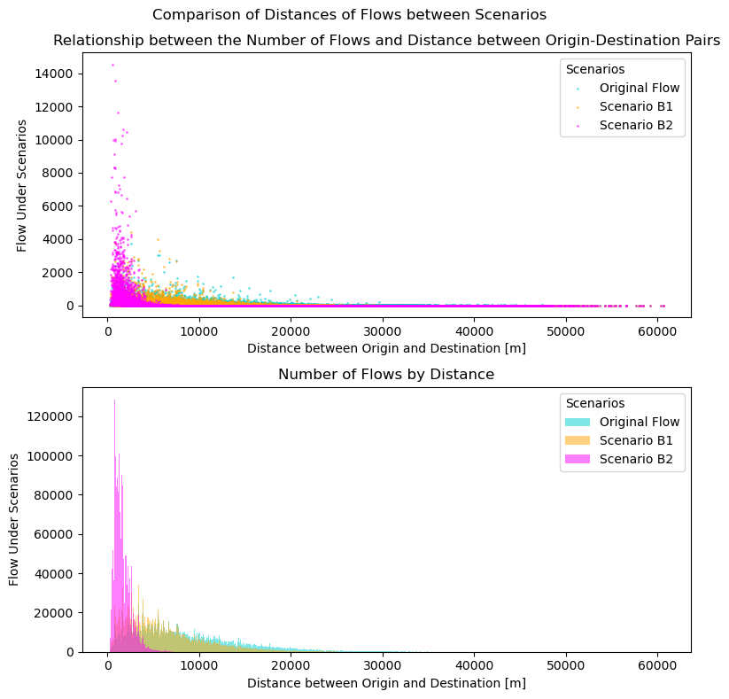

Urban Simulation Report
Part 1: London’s Underground Resilience
The first part of this report aims to address the resilience of the London Underground using network analysis.
Topological Network
Centrality Measures
Centrality measures are characteristics of nodes showing their importance in various aspects. In this section, we will identify nodes on the network with the highest centrality in the following measurements: degree centrality, closeness centrality, and betweenness centrality. The 3 central measures that I will cover in this report are: degree centrality, betweenness centrality, and closeness centrality. We will consider a network of \(n\) nodes, and the number of links between nodes \(i\) and \(j\) will be denoted as \(A_{ij}\).
Degree centrality is the number of links that are connected to each node. Considering the underground as an undirected graph, the degree centrality \(k_i\) for node \(i\) is calculated as
\[ k_i = \sum_{j} A_{ij} \]
In the context of the underground network, the degree corresponds to the number of lines that serve each station counting 1 for each direction. A high degree centrality indicates there are many lines that serve the station, thus identifies importance of the station as a transit hub that allows for transfer between multiple lines.
Betweenness centrality is defined by the number of shortest paths that run through the node (or link). The betweenness centrality \(x_i\) can be calculated as
\[ x_i = \frac{1}{n^2} \sum_{st} \frac{n^i_{st}}{g_{st}} \]
where
\[ n^i_{st} = \begin{cases} 1 \quad (\text{if node } i \text{ is on geodesic from } s \text{ to }t)\\ 0 \quad (\text{otherwise}) \end{cases} \]
and \(g_{st}\) is the total number of geodesic paths from \(s\) to \(t\). High betweenness centrality on the underground shows there are many passengers travelling through the station during their journeys. When this station becomes inaccessible, a large amount of people will be affected.
Closeness centrality is the inverse of the main geodesic distance \(l_i\) of one node to all the other nodes. Given the geodesic distance between nodes \(i\) and \(j\) as \(d_{ij}\), the closeness centrality \(C_i\) is calculated as
\[ C_i = \frac{1}{l_i} = \frac{n}{\sum_j d_{ij}} \]
A high closeness centrality in a rail network indicates the station is within a short distance from all the other stations, located at the physical centre of the network. Provided that the network spreads out radially from the city centre, the stations with highest closeness centrality are assumed to be located within the traditional city centre of the city.
Flows: Weighted Network
Part 2: Spatial Interaction Models
In the second part, we will analyse the OD matrix of the London Underground.
Models and Calibration
Family of Spatial Interaction Models
The family of spatial interaction models are as follows:
The unconstrained model only constrains the model with matching the total flows with the observed value, written as
\[ T_{ij} = K O^{\alpha}_i D^{\gamma}_j f(c_{ij}) \]
where \(K\) is the constant
\[ K = \frac{T}{\sum_i \sum_j O^{\alpha}_i D^{\gamma}_j f(c_{ij})} \]
so that the total number of journeys are constrained.
The singly constrained model constrains the total number of observations for each component at the origin or the destination. The origin constrained model fixes the total number of journeys at the origin, as:
\[ T_{ij} = A_i O^{\alpha}_i D^{\gamma}_j f(c_{ij}) \tag{1}\]
The parameter \(A_i\) is determined so that the total at the origin is constrained, that is:
\[ \sum_j T_{ij} = O_i \therefore A_i = \frac{1}{\sum_j D_j f(c_{ij})} \]
Similarly, the destination constrained model constrains the total at the destination.
\[ T_{ij} = O^{\alpha}_i B_j D^{\gamma}_j f(c_{ij}) \quad \text{where } \left (B_j = \frac{1}{\sum_i O_i f(c_{ij})} \right) \]
The doubly constrained model constrains both the total at the origin and destination.
\[ T_{ij} = A_i O^{\alpha}_i B_j D^{\gamma}_j \exp(-\beta c_{ij}) \tag{2}\]
Calibration of Cost Function
The dataset used for analysis have the following data for every origin-destination pair for the London Underground Stations.
- population of origin
- jobs at the destination
- distance between origin and destination
- flow from the origin to the destination
Using this dataset, we will use the doubly constrained model to estimate the best cost function and parameters by comparing with the observed flow. Constraining both the total journeys for both the origin and destination will enable the full utilisation of observed data, enabling a most accurate calibration of the cost function.
The doubly constrained model after a logarithm transformation of Equation 2 into a Poisson expression can be written as:
\[ \ln(T_{ij}) = \ln A_i + \ln O^{\alpha}_i + \ln B_j + \ln D^{\gamma}_j + \ln f(c_{ij}) \\ \]
We will compare the negative exponential and inverse power relationships as the cost function \(f(c_{ij})\) as follows:
\[ f(d_{ij}) = \begin{cases} \exp(-\beta c_{ij}) \text{ (Negative Exponential)} \\ c^{-\beta}_{ij} \text{ (Inverse Power)} \end{cases} \]
For each cost function, we have run the Poisson Regression to calculate the optimal parameter \(\beta\).
| Cost Function | Parameter \(\beta\) | \(R^2\) value |
|---|---|---|
| Negative exponential \(f(c_{ij}) = \exp(-\beta c_{ij})\) | \(\beta = 1.543 \times 10^{-4}\) | \(R^2 = 0.4979\) |
| Inverse Power \(f(c_{ij}) = c^{-\beta}_{ij}\) | \(\beta = 9.096 \times 10^{-1}\) | \(R^2 = 0.4077\) |
From these results, the negative exponential model for the cost function has a better fit to the observed flows. When considering the scenarios, the cost function
\[ f(c_{ij}) = \exp(-\beta c_{ij}) \quad (\beta = -1.543 \times 10^{-4}) \tag{3}\]
will be used.
Scenarios
The scenarios we will observe in this report are summarised in Table 1.
| Scenario | Explanation |
|---|---|
| Scenario A | Jobs at Canary Wharf decrease by 50 % |
| Scenario B | Increase in cost of transport - considering 2 parameters |
Since scenario A involves the change in the characteristics of the destination, the origin constrained model is used for the analysis to preserve the number of commuters starting their journeys in each area.
Calibration of \(\gamma\)
Since the origin-constrained model will be used for the analysis of the scenarios, the gamma variable introduced in Equation 1 must be calibrated before applying to the new scenarios. \(\gamma\) with the highest R-squared value for estimating the original flow will be used, resulting as follows:
\[ \gamma = 7.556 \times 10^{-1} \quad (R^2 = 0.4680) \tag{4}\]
Scenario A
We will first decrease the number of jobs at Canary Wharf by 50%, from the original 58,772 to 29,386. Using the origin-constrained model, the procedure is as follows:
- Calculate the flow based on the origin-constrained model \(T_{ij} = A_i O_i D^{\gamma}_j \exp(-\beta c_{ij})\) to retrieve the optimal \(\gamma\) value for this dataset. The value for parameters \(\beta, \gamma\) is derived from Equation 3 and Equation 4.
- Reduce the number of jobs at Canary Wharf (transform \(D_j\) into \(D'_j\))
- Recalibrate the adjusted \(A'_i\) parameter with the new distribution of using the relationship \(A'_i = \frac{1}{\sum_j D'^{\gamma}_j f(c_{ij})}\)
- Calculate the new flows using the relationship \(T'_{ij} = A'_i O_i D'^{\gamma}_j \exp(-\beta c_{ij})\)
Using the origin constrained model, we will observe how the destination of commuters changed in reaction to the decrease in jobs in Canary Wharf.
We have observed a significant drop in the number of journeys terminating at Canary Wharf from 47,690 in the original simulation to 29,496 in scenario A, which is 61.9 % of the original amount. As observable from Figure 1, the decrease in the flows to Canary Wharf occured evenly among all origins, and has been redistributed into other destinations.

Scenario B
We will consider 2 scenarios for the change in the cost of transport. Given the original parameter as \(\beta\), the parameters \(\beta_1, \beta_2\) for the two scenarios B1 and B2 will be modified as shown in Equation 5 and Figure 2.
\[ \begin{cases} \beta_1 = 2 \beta \\ \beta_2 = 10 \beta \end{cases} \quad (\beta = -1.543 \times 10^{-4}) \tag{5}\]
The flows between origin-destination pairs for each scenario, plotted by distance of journeys, are shown in Figure 3. As the \(\beta\) increases, the longer distance journeys are disencouraged, and the distribution of the distance of journeys become negatively skewed.

Discussion
In this section, we will discuss the impact of each scenario on the distribution of flows in the underground network. The measurements summarised in Table 2 are considered to examine the changes that occured as a result of each scenario.
| Measurement | Explanation |
|---|---|
| Quantity of change in destination | The number of flows that have different destination compared to the original scenario. A larger number of change in destination indicate larger impact. |
| Mean distance of journeys | The mean distance of all journeys simulated in each scenario. A larger change in the distance compared to the original simulation indicate larger impact. |
Both measurements indicate that scenario B2 had the largest impact on the number of flows, and scenario A being the least impactful.
Word count: x words
GitHub repository (as hyperlink): Urban_Simulation_Report